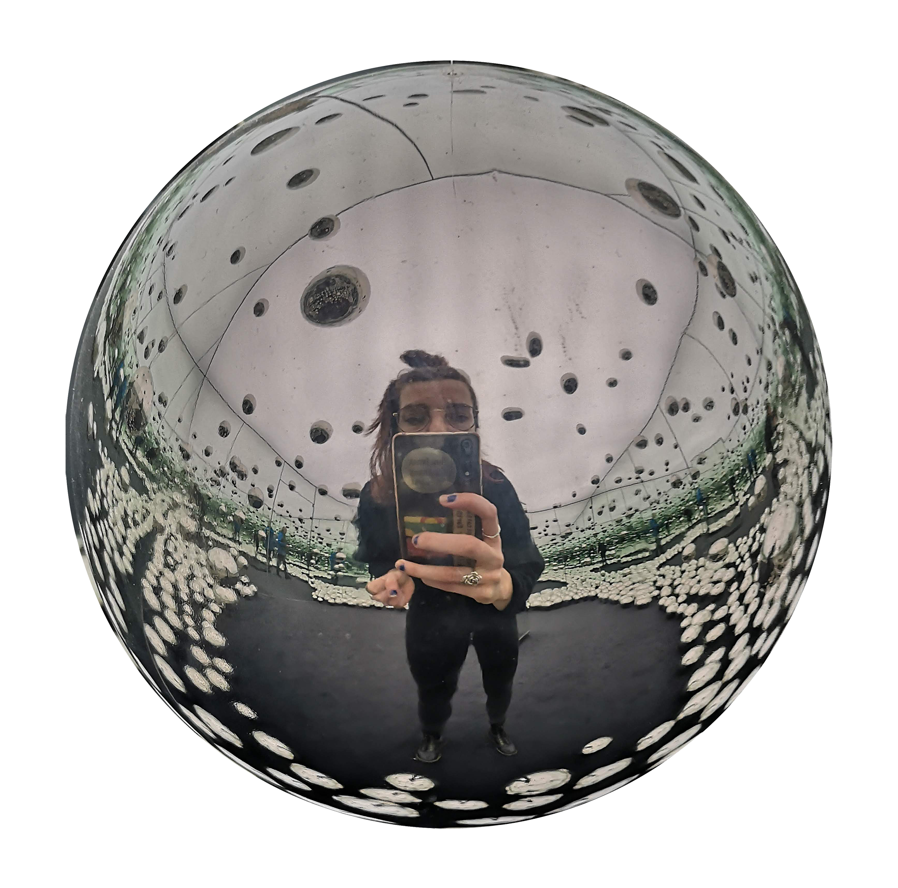

| Hi! My name is Cecilia Turemark and I work as a Graphic Designer. I have experience both as a freelance designer and inhouse. I (genuinely) love to do research to create strong concepts. I also love that this job gives me the opportunity to work in both analogue and digital mediums. If you want to get in touch: 0735093450 cturemark(a)gmail.com |
|  |